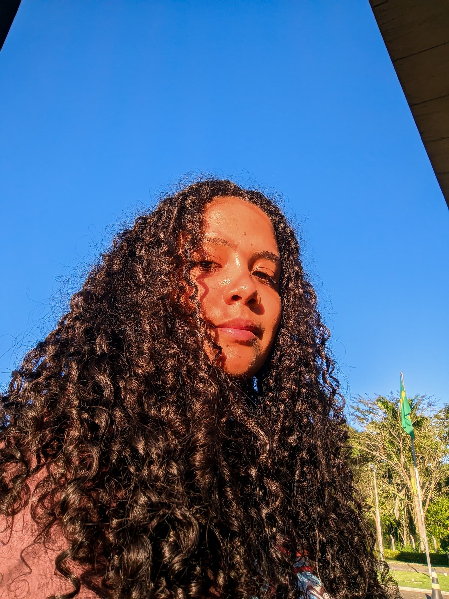

Brenda
Semestre: 6º
"Desde sempre tive um grande interesse por comunicação, design e tecnologia, mas, por diversas razões, sempre deixei isso em segundo plano. Ao ingressar no curso de Mídia e Tecnologia da UFSB, finalmente estou tendo a oportunidade de explorar essas paixões. Entrei com uma base de conhecimento, mas, ao longo do curso, venho aprendendo muito e ampliando o que já sabia."